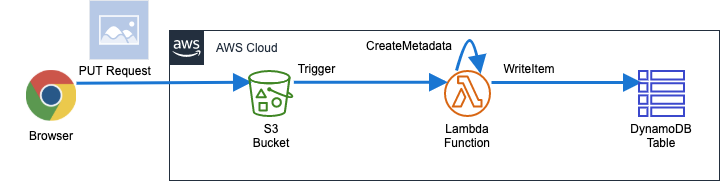

画像をアップロードをトリガーにメタデータを保存する非同期アーキテクチャ
この課題ではAmazon S3に画像をアップロードすると､メタデータを取得し､ DynamoDBに保存する非同期アーキテクチャを構築します｡
構成図

アプリケーションの取得
作業ディレクトリに移動します｡
cd ~/environment
サンプルアプリケーションを取得します｡
git clone https://github.com/classmethod/serverless-hands-on
取得できていることを確認します｡
cd serverless-hands-on/tasks/task2
ls
(例)
Makefile Pipfile Pipfile.lock answer sam src
SAMテンプレートの作成
未完成のSAMテンプレートを完成させます｡下記のリンクを参考にSAMテンプレートの TODOとなっている箇所を完成させます｡
AWSTemplateFormatVersion: "2010-09-09" Transform: AWS::Serverless-2016-10-31 Parameters: LambdaLogGroupNamePrefix: Type: String Default: /aws/lambda Globals: Function: Runtime: python3.7 Timeout: 30 MemorySize: 512 # どちらの値もLambdaでよく使うのでGlobalsに定義 Environment: Variables: DATA_TABLE_NAME: !Ref DataTable Resources: # metadataを保存するTable。 # 同一アカウント、同一リージョン内で一意にしないといけないので、名前は自動生成させる DataTable: Type: AWS::Serverless::SimpleTable Properties: # TODO: プライマリキーをString型のidという名前で定義します｡ # https://github.com/awslabs/serverless-application-model/blob/master/versions/2016-10-31.md#awsserverlesssimpletable # 画像を保存するBucket # 全世界で一意である必要があるので、名前は自動生成させる DataBucket: Type: AWS::S3::Bucket CreateMetadataFunction: Type: AWS::Serverless::Function Properties: CodeUri: ../src Handler: index.handler Policies: - arn:aws:iam::aws:policy/AmazonS3FullAccess - arn:aws:iam::aws:policy/AmazonDynamoDBFullAccess Events: ObjectCreated: # TODO: S3バケットにオブジェクトが作成された時にLambda関数を実行します｡ # https://github.com/awslabs/serverless-application-model/blob/master/versions/2016-10-31.md#s3 # Lambdaのログ出力先 # 明示的に作成する事で､スタック削除時にログが削除される(継続的に課金されない) CreateMetadataLogGroup: Type: AWS::Logs::LogGroup Properties: LogGroupName: !Sub ${LambdaLogGroupNamePrefix}/${CreateMetadataFunction} Outputs: LambdaFunction: Value: !Ref CreateMetadataFunction DataBucketName: Value: !Ref DataBucket MetadataTableName: Value: !Ref DataTable
Info
演習時間:10分
講師は演習時間が過ぎたタイミングで､answer/template.yamlを元に､説明を行ってください｡
完成したら下記のバリデーションコマンドでエラーが無いことを確認してください｡
sam validate --template sam/template.yaml
デプロイ
Makefileをデプロイ用タスクランナーとして使用しデプロイを行います｡ 作業ディレクトリに移動します｡
cd ~/environment/serverless-hands-on/tasks/task2
Makefile
SHELL = /usr/bin/env bash -xeuo pipefail stack_name:=create-metadata init: @pipenv install --dev clean: @rm -rf src/requirements.txt @rm -rf .aws-sam build: clean @pipenv lock --requirements > src/requirements.txt @pipenv run sam build --use-container --template sam/template.yaml --base-dir src package: build @pipenv run sam package --s3-bucket $$SAM_ARTIFACT_BUCKET --output-template-file template.yaml deploy: package @pipenv run sam deploy \ --template-file template.yaml \ --stack-name $(stack_name) \ --capabilities CAPABILITY_IAM \ --no-fail-on-empty-changeset @pipenv run aws cloudformation describe-stacks \ --stack-name $(stack_name) \ --query Stacks[0].Outputs destroy: @aws s3 rb --force s3://$$(pipenv run aws cloudformation describe-stacks \ --stack-name $(stack_name) \ --query 'Stacks[].Outputs[?OutputKey==`DataBucketName`].[OutputValue]' --output text) || true @pipenv run aws cloudformation delete-stack --stack-name $(stack_name) @pipenv run aws cloudformation wait stack-delete-complete --stack-name $(stack_name) info: @echo -n "StackName: " @echo $(stack_name) .PHONY: \ build \ package \ deploy \ info \ clean \ destroy
ビルド
build: clean @pipenv lock --requirements > src/requirements.txt @pipenv run sam build --use-container --template sam/template.yaml --base-dir src
pipenv lock --requirements > src/requirements.txtで依存ライブラリ情報をテキスト出力します｡
sam build --use-container --template sam/template.yaml --base-dir srcでコードのビルド及び依存パッケージのダウンロードと.aws-samに配置を行っています｡後ほどデプロイが終わった後に確認してください｡
パッケージ
package: build @pipenv run sam package --s3-bucket $$SAM_ARTIFACT_BUCKET --output-template-file template.yaml
sam package --s3-bucket $$SAM_ARTIFACT_BUCKET --output-template-file template.yamlでコード及びライブラリの圧縮&アップロードとCloudFormationテンプレートへの変換を行います｡
生成されたテンプレートでは､CodeUrl:がアップロードされたバケット名+オブジェクトキー名に変換されています｡後ほどデプロイが終わった後に確認してください｡
デプロイ
deploy: package @pipenv run sam deploy \ --template-file template.yaml \ --stack-name $(stack_name) \ --capabilities CAPABILITY_IAM \ --no-fail-on-empty-changeset @pipenv run aws cloudformation describe-stacks \ --stack-name $(stack_name) \ --query Stacks[0].Outputs
pipenv run sam deploy --template-file template.yaml --stack-name $(stack_name) --capabilities CAPABILITY_IAM --no-fail-on-empty-changesetでデプロイを行っています｡
オプションの説明
--capabilities CAPABILITY_IAM- 意図しないIAMリソース作成を防ぐための機能
- 指定する事でIAMリソースの作成を許可する
- AWS Identity and Access Management によるアクセスの制御 - AWS CloudFormation
--no-fail-on-empty-changeset
デプロイ手順
deploy→package→build→cleanと依存関係が定義されているので､deployコマンドを実行する事で全ての処理が行なえます｡
make deploy
デプロイが正常に完了したら下記を確認してください｡
.aws-sam配下にコードとライブラリが配置されている事template.yamlのCodeUri:が変換されている事
動作の確認
S3バケットにファイルをアップロードし､メタデータが作成される事を確認します｡
AWSリソース名の確認
作成されたAWSリソースの名前を取得し変数に格納します｡
DATA_BUCKET_NAME=$(aws cloudformation describe-stacks --stack-name create-metadata --query 'Stacks[].Outputs[?OutputKey==`DataBucketName`].[OutputValue]' --output text) METADATA_TABLE_NAME=$(aws cloudformation describe-stacks --stack-name create-metadata --query 'Stacks[].Outputs[?OutputKey==`MetadataTableName`].[OutputValue]' --output text) LAMBDA_FUNCTION=$(aws cloudformation describe-stacks --stack-name create-metadata --query 'Stacks[].Outputs[?OutputKey==`LambdaFunction`].[OutputValue]' --output text) echo ${DATA_BUCKET_NAME} echo ${METADATA_TABLE_NAME} echo ${LAMBDA_FUNCTION}
(例)
create-metadata-databucket-zj5auazx1z3j create-metadata-DataTable-1UD2D6J9XX9XU create-metadata-CreateMetadataFunction-16DLW118PT8H1
DynamoDBの事前確認
初期状態のDynamoDBテーブルが空である事を確認します｡
aws dynamodb scan --table-name ${METADATA_TABLE_NAME}
(例)
{ "Items": [], "Count": 0, "ScannedCount": 0, "ConsumedCapacity": null }
画像のアップロード
画像ファイルを用意し､S3バケットにアップロードします｡
curl -O https://s3-ap-southeast-1.amazonaws.com/kato.ryo-docs/lena.jpg aws s3 cp ./lena.jpg s3://${DATA_BUCKET_NAME}/
DynamoDBの事前確認
DynamoDBテーブルにメタデータが格納されている事を確認します｡
aws dynamodb scan --table-name ${METADATA_TABLE_NAME}
(例)
{ "Items": [ { "object_key": { "S": "lena.jpg" }, "createdAt": { "N": "1569563297808" }, "id": { "S": "5fd53590-86a1-468b-b437-82f7dcff9197" }, "bucket_name": { "S": "create-metadata-databucket-1egfd65fgvxr9" } } ], "Count": 1, "ScannedCount": 1, "ConsumedCapacity": null }
GUIでの確認
Info
講師はAWSマネジメントコンソールで､作成されたリソースの状態を説明してください｡ 1. S3バケットにアップロードされた画像ファイル 1. イベントの設定 1. Lambda Functionの動作(CloudWatch Logs) 1. DynamoDB テーブル
削除
作成されたAWSリソースを削除します｡ CloudFormationスタックを削除すると､作成されたAWSリソースも削除されます｡
make destroy